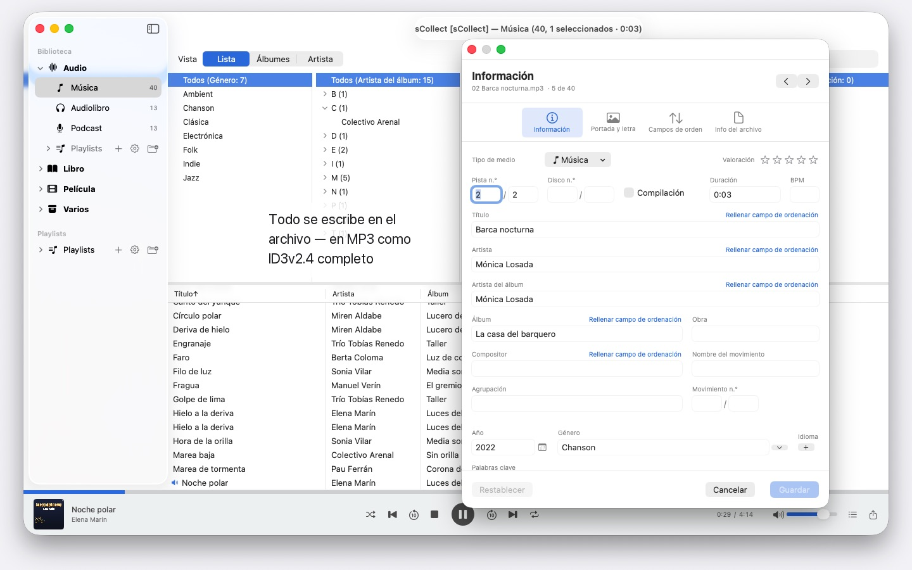
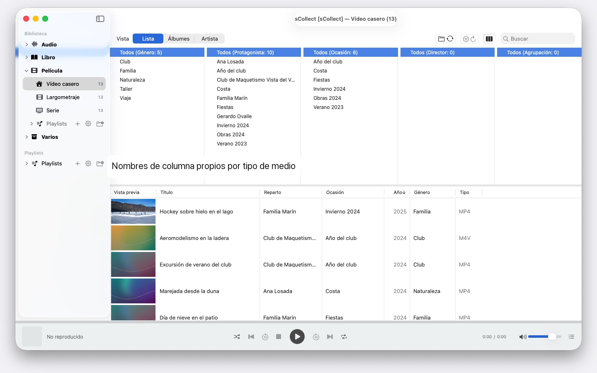

Miles de artistas, varios Mac, cualquier macOS desde la versión 14: sCollect ordena música, películas y libros y escribe tus datos en los archivos. Sin cuenta ni nube.


sCollect es una biblioteca para todo lo que se puede coleccionar: música, películas, vídeos caseros, audiolibros, podcasts y e-books — y también para objetos que no son archivos de medios en absoluto, como monedas o sellos, fotografiados y descritos. Cómo se llaman las categorías lo decides tú.
La diferencia con un catálogo corriente: sCollect escribe de vuelta. Lo que introduces en el editor no acaba solo en la base de datos, sino en los metadatos del propio archivo. Así tu trabajo se conserva aunque algún día dejes de usar sCollect.
UN ORDEN QUE SE HACE SOLO
Al importar, sCollect coloca cada archivo en su sitio — por tipo de medio, artista, álbum o fecha, según lo que hayas ajustado. Cada tipo de medio puede tener su propia carpeta, incluso en otro disco duro: las películas en el disco externo grande, la música en el interno rápido.
Si prefieres dejar tu colección donde está, la vinculas en lugar de copiarla. Los archivos vinculados no se tocan nunca.
PARA FOTOS Y GRABACIONES DE VÍDEO
Si haces fotos o grabas vídeo, guardas un tipo de medio por fecha: al importar, los archivos van a carpetas de año y mes, y el nombre del archivo lleva la fecha de captura, leída del propio archivo — en los vídeos con un aviso cuando la cámara no indica la zona horaria. Los prefijos de cámara como IMG_ desaparecen del título si quieres, se añade una fecha ISO, y la lista y el disco ordenan igual.
METADATOS QUE LLEGAN AL ARCHIVO
Un editor para un solo objeto, otro para muchos a la vez. Ambos escriben en el formato que trae el archivo — ID3v2.4 en MP3, la estructura de etiquetas de MP4 y M4A, comentarios Vorbis en FLAC y OGG, los bloques de texto de AIFF y WAV, DSF en grabaciones DSD, EXIF, IPTC y XMP en imágenes.
Donde un formato no tiene campo para algo, o un archivo está protegido contra copia, sCollect deja al lado un archivo anexo en vez de perder el dato. Si el archivo difiere de la biblioteca, el editor lo dice antes de que sobrescribas nada.
LO QUE ACORTA EL TRABAJO
- Buscar y reemplazar en todos los campos, con vista previa antes del cambio
- Encontrar duplicados en toda la categoría, con un veredicto comprensible sobre qué versión es la mejor
- Un explorador de columnas como el de una app de música, con selección múltiple por columna. Miles de artistas sin desplazamiento sin fin: agrupados por inicial, A, AB, ABB – tres clics hasta el destino
- Reproducción de audio y vídeo, con listas de reproducción y la posición de reproducción recordada
ENCONTRAR LOS ARCHIVOS FALTANTES EN VEZ DE BUSCARLOS
Una pasada marca cada entrada cuyo archivo ya no está y recuerda el resultado. Una vista propia muestra solo esas entradas y va tachando lo que has vuelto a vincular.
VARIOS MAC, UNA COLECCIÓN
Una biblioteca puede registrar copias. Lo que cambias en el fondo principal pasa después a cada copia accesible, archivos y etiquetas incluidos. Si una copia está sin conexión, el cambio queda pendiente y se aplica en cuanto vuelve.
Da igual qué macOS tenga cada Mac: uno con macOS 14 y otro con macOS 26 leen la misma colección, y ninguna actualización del sistema la convierte. Eso sí, las copias no son una copia de seguridad.
IMPORTACIÓN Y EXPORTACIÓN
Las colecciones existentes entran por el XML de iTunes, con valoraciones y listas de reproducción. Salen como sCollect-XML — sin pérdidas, para una mudanza o una copia de seguridad —, como lista de reproducción para Apple Music o como XML de iTunes.
EN TU MAC, Y SOLO AHÍ
Sin cuentas, sin nube, sin analítica, sin publicidad. sCollect trabaja exclusivamente con las carpetas que le das.
Por eso sCollect tampoco importa CD ni busca la información de las pistas en internet — Apple Music ya sabe hacer ambas cosas. Importa allí el CD como AAC, Apple Lossless o MP3, y los archivos llevarán su información a sCollect. Así ningún servicio sabe qué coleccionas ni cómo lo ordenas.
En 25 idiomas a elegir libremente, cada uno con ayuda completa.
- Requiere macOS 14 o posterior
- 26 idiomas
- Soporte: SwiftAppsBavaria@gmx.net
Más apps
SwiftRename
Renombrar archivos por lotes: por fecha de captura, con numeración consecutiva o directamente clasificados en carpetas de año y mes.
sVectorLift
Abrir, ver y guardar clipart vectorial antiguo como SVG: CorelDRAW, Windows Metafile y CGM.
sName2Date
Escribir la fecha del nombre de archivo como fecha de captura en fotos, vídeos y grabaciones de audio, para que un archivo como IMG_20240115_103000.jpg se ordene correctamente en cualquier gestor de fotos. Los datos de imagen y de vídeo no se tocan; los PDF y otros archivos sin fecha de captura reciben la fecha del archivo y, si se desea, también el nombre pasa a la notación ISO. Árboles de carpetas enteros de una vez, y cada pasada se puede deshacer con ⌘Z.
sName2Date Lite
La edición para un archivo por pasada: escribir la fecha del nombre de archivo como fecha de captura en una foto, un vídeo o una grabación de audio, ajustarla a mano, pasar el nombre a la notación ISO y deshacerlo todo con ⌘Z; las mismas capacidades que sName2Date, solo que sin carpetas enteras.
sCollectPlay
El reproductor para la biblioteca multimedia: reproducir música, películas, audiolibros y pódcasts simplemente desde una carpeta, un XML de iTunes o una biblioteca de sCollect, sin cambiar nada en las etiquetas de los archivos. Con listas de reproducción, pistas de audio y de subtítulos y, en las películas, cámara lenta y avance fotograma a fotograma. Lo que macOS no reproduce por sí mismo, como MKV, AVI o DSD, se pasa a un reproductor externo.
sCollectPlay Lite
La edición ligera de sCollectPlay: simplemente abrir una carpeta, un XML de iTunes o una biblioteca de sCollect y reproducir desde ahí música, películas, audiolibros y pódcasts, con listas de reproducción, pistas de audio y de subtítulos, cámara lenta y avance fotograma a fotograma. Una fuente por sesión; el navegador de columnas, las listas de reproducción propias y las fuentes usadas recientemente quedan reservados a la versión completa.
sBikeBridge
Analizar salidas en bicicleta sin subirlas a un portal: importar archivos FIT de cualquier ciclocomputador que grabe en este formato, además de GPX y TCX. Las salidas se guardan en una biblioteca propia en el Mac, con mapa, potencia y frecuencia cardiaca, fotos y notas; la importación detecta los duplicados. Las estadísticas por año o por mes y los filtros por distancia, desnivel y duración permiten comparar las salidas. Si se desea, el mapa también está disponible sin conexión.